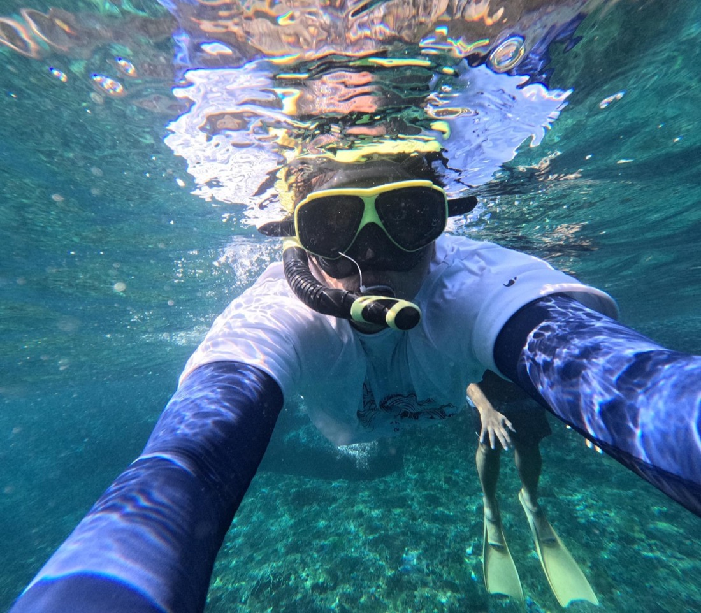
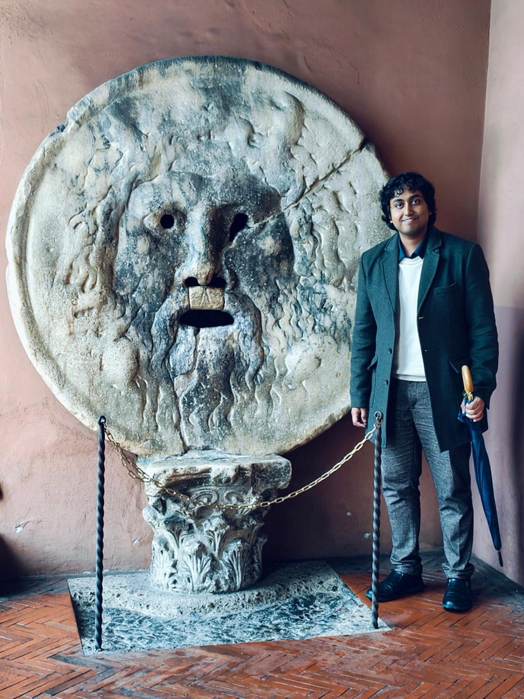

JD candidate at Michigan Law. Researcher at the Center for AI Risk Management and Alignment.
avyaymc at gmail · avyay at umich.edu/carma.org · scholar · linkedin
Hello there! I'm Avyay and I study law at the University of Michigan Law School. I previously studied compsci and then worked on AI safety and governance. Last summer I was at a law firm in Boston. I do research at the Center for AI Risk Management and Alignment.
I am currently interested in and work on multi-agent interaction, particularly on interactions with legal institutions. I think keeping our legal epistemics grounded in humans or at least unpolluted by AI is important. I also think legal institutions can effectuate meaningful change in labs' treatment of the serious risks AI systems pose.
Full list on Google Scholar.
I have previously taught/facilitated AI safety courses at BlueDot Impact, the Center for AI Safety and Steadrise(Impact Academy). I have also coached debate at ARC foundation and ISDS.
I spent a lot of time in competitive parliamentary debate. I ran my university's debating society and also coached a team representing India at the school level.
I speak six languages. I've played the piano, violin, ukulele and bagpipes(basic). I trained as a classical singer. I learned to swim in March 25 and then went diving and long distance swimming in June 25. I've been to around twenty countries (mostly solo). I have ended up with an obsidian dagger, a mask from Indonesia and a memento from the Vatican as a part of a private walk through the necropolis.
I previously helped with Project December back in high school. I transcribed William Herschel's map of the galaxy (in Bath) to find nebulae. I am an active contributor to projects on Zooniverse and find similar crowd sourced work incredibly fun.
I did some amateur movie making when I was younger and played a lot of CTFs. I am really big into Chelsea (Blue is the colour💙) and all things footy.
I like engaging with people. Please e-mail me! If you are not a person, I have a page for you too.

